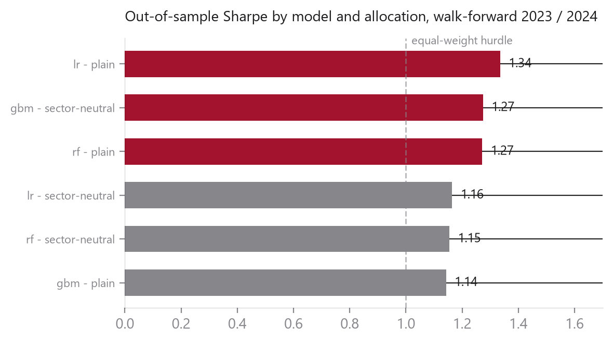
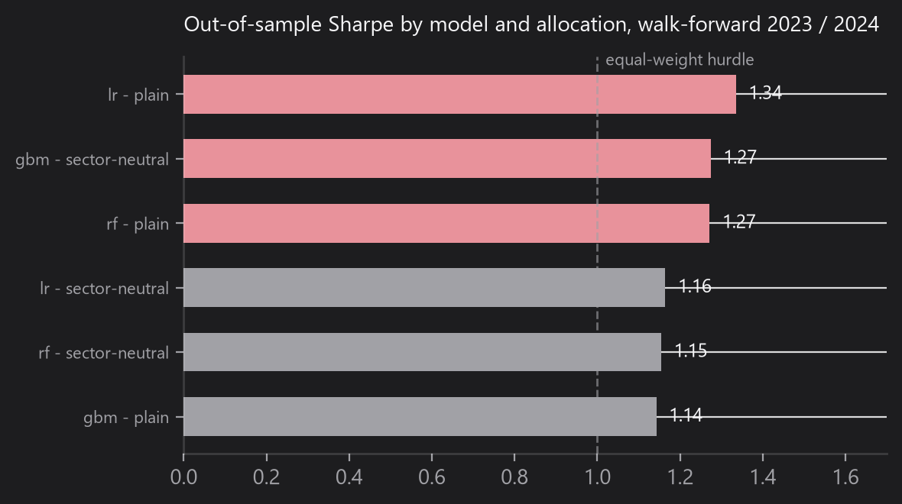

Walk-forward factor backtest
Does a machine-learned equity signal survive real costs and honest scoring?
Open repo1.34out-of-sample Sharpe, the linear baseline. Random forest and gradient boosting both lost to it on a 24-ticker panel once friction is priced in.
AimFind out whether a learned equity signal survives real costs and honest out-of-sample scoring, not just a good-looking in-sample fit.
How I did itRanked 24 US mega-caps by predicted one-month return, long the top 8, quarterly rebalance at 10 bps. Trained walk-forward, on data before each target year only, with a FRED macro overlay, and priced every trade.
ResourcesPython, scikit-learn, LightGBM, pandas, yfinance, FRED. 24-ticker panel, 2017-2024. 16 tests. About 1.5 weeks.
FindingsOOS Sharpe 1.34 for the linear baseline; random forest and gradient boosting both lost to it. A sector-neutral cap lifted LightGBM IR to 0.56.
Why it mattersThis is the thesis of the whole portfolio. With a small cross-section, model depth is a liability, and the walk-forward split is the tool that exposes it.
Skill learnedWalk-forward evaluation and cost-aware backtesting. Reading a loss as a result, not a bug to delete.

